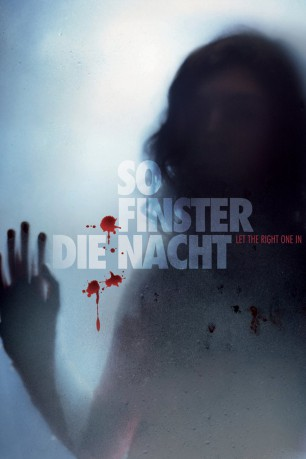

#3878 So finster die Nacht
Alternativ: Let the Right One In (Englischer Titel)
 
 IMDB-Wertung: 8.0 / 10
IMDB-Wertung: 8.0 / 10  Metascore: 0
Metascore: 0 
In dem Stockholmer Vorort Blackeberg wird die Leiche eines Jungen gefunden. Sein Körper enthält keinen Tropfen Blut mehr, alles deutet auf einen Ritualmörder hin. Noch ahnt niemand, was tatsächlich geschehen ist. Auch der zwölfjährige Oskar verfolgt fasziniert die Nachrichten. Wer könnte der Mörder sein? Und warum sind in der Nachbarswohnung die Fenster stets verhangen?
Jahr: 2008
Dauer: 114 Minuten
FSK: 16
Land: Schweden Studio: MFA FilmdistributionTonspuren:
Untertitel: Deutsch,
Auflösung: 1080p (1920x816) Größe: 9123 MB
Genre: Horror, Drama, Liebe
Regisseur: Tomas Alfredson
Drehbuch: Richard Epcar
Soundtrack:
Darsteller:
- Kåre Hedebrant als Oskar
- Lina Leandersson als Eli
- Per Ragnar als Håkan
- Ika Nord als Virginia
- Tom Ljungman als Ung man 1
- Elif Ceylan als Elis röst
- Robin De Lano als Eli , uncredited
 Philip Hersh als Additional Voices , uncredited
Philip Hersh als Additional Voices , uncredited- Henrik Dahl als Erik
- Karin Bergquist als Yvonne
- Peter Carlberg als Lacke
- Mikael Rahm als Jocke
- Karl-Robert Lindgren als Gösta
- Anders T. Peedu als Morgan
- Pale Olofsson als Larry
- Cayetano Ruiz als Magister Avila
- Patrik Rydmark als Conny
- Johan Sömnes als Andreas
- Mikael Erhardsson als Martin
- Rasmus Luthander als Jimmy
- Sören Källstigen als Janne - Eriks kompis
- Malin Cederblad als Sjukhusreceptionist
- Berndt Östman als Virginias sjuksköterska
- Kajsa Linderholm als Lärarinnan
- Adam Stone als Polis i klassen
- Ingemar Raukola als Vaktmästaren
- Kent Rishaug als Kioskägaren
- Linus Hanner als Pojke som dödas
- Fredrik Ramel als Ung man 2
- Christoffer Bohlin als Matte - upphängd pojke
- Julia Nilsson als Tonårstjej 1
- Elin Almén als Tonårstjej 2
- Bengt Bylund als Nyhetsuppläsare radio
- Bengt Lindström als Väderleksrapport radio
- Susanne Ruben als Eli åldrad
- Jonas Kruse als Polis på sjukhus , uncredited
- Lena Nilsson als Håkans sjuksköterska , uncredited
Datei: X:\2008(N-Z)\So finster die Nacht (2008, FSK16, 1920x816).mkv seit 26.06.2016
Festplatte: HD 2008(G-Z)-2009(A-F)
 Es gibt insgesamt 91 Filme in der Gruppe '2008(N-Z)'
Es gibt insgesamt 91 Filme in der Gruppe '2008(N-Z)'